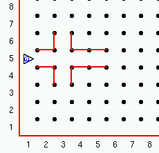
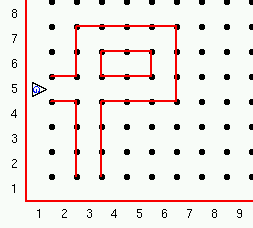

Je kunt nu Guido programmeren om in zijn wereld rond te lopen, piepers te pakken en te plaatsen. Om zijn wereld wat interessanter te maken gaan we muren plaatsen die Guido moet zien te vermijden. Als Guido tegen een muur aanloopt wordt het programma gestopt met een fout melding. Dit is in de robot ingebouwd. Als hij iets moet doen wat niet kan dan stopt het programma. Bijvoorbeeld, als je hem een pieper wilt laten pakken die er niet is, dan stopt hij. Hetzelfde geldt voor het plaatsen van een pieper als hij geen piepers meer heeft.
Dus wees voorzichtig en laat Guido geen dingen doen die niet kunnen.
Hier is een voorbeeld van een wereld bestand met muren:
Robot 1 5 O 1 Muur 2 4 N Muur 2 4 O Muur 3 4 O Muur 4 4 N 2 Muur 2 5 N Muur 2 6 O Muur 3 6 O Muur 4 5 N 2het formaat van een muur omschrijving is:

Opdracht:
Verander het wereld bestand zo dat het het pad voor Guido deels gesloten is zoals in deze afbeelding:

Tip:
Je kunt ook de "Wereld constructeur" gebruiken uit het "GvR" menu.
Deze serie Guido van Robot lessen zijn geschreven door
Roger Frank.
Commentaar and suggesties over deze lessen kunnen gestuurd worden naar
Stas Zytkiewicz die de lessen
vertaalde naar het Nederlands.
De orginele lessen zijn te vinden op de
Guido van Robot website.
Copyright
© 2003 Jeffrey Elkner.
© 2007 Stas Zytkiewicz.